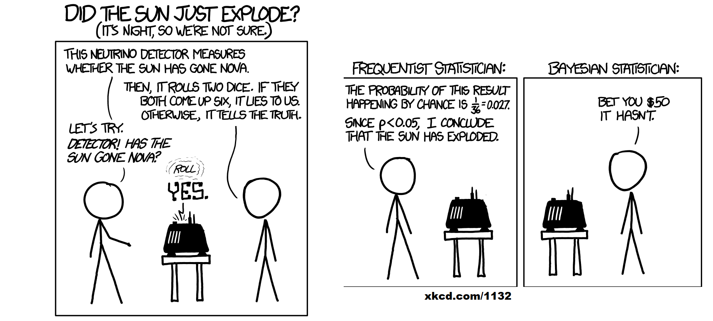
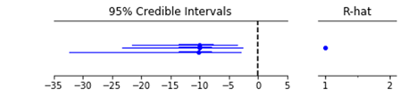
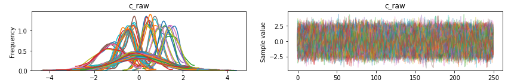
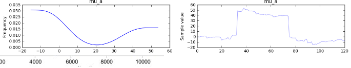
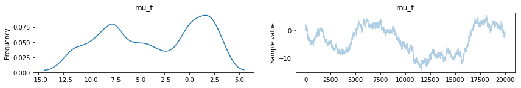
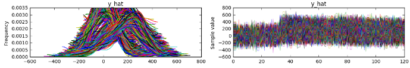
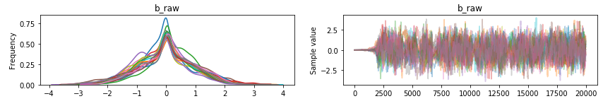
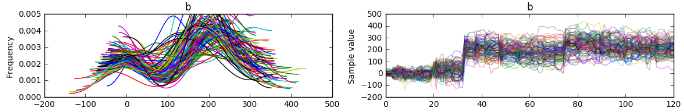
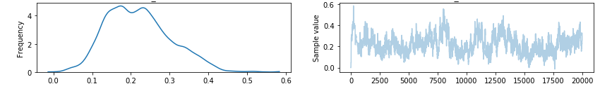

class: center, middle background-color: white .title[Hierarchical Models:] .subtitle[Tutorial] .author[Laila A. Wahedi, PhD] .date[July 12, 2018] .institution[McCourt School of Public Policy, Georgetown University] <img style="width:20%" src="../figures/seal.png"> .center[] .footnote[Created with [{Remark.js}](http://remarkjs.com/) using [{Markdown}](https://daringfireball.net/projects/markdown/) + [{MathJax}](https://www.mathjax.org/) + [{Liminal}](http://www.jmlilly.net/liminal.zip)] --- class: center # Linear Regression and Probability How do we estimate: `$$P(\mathbf Y) \sim \mathcal{N}(\beta \mathbf X,\sigma ^2)$$` -- We know X, Y, and can calculate the errors, need `\(\beta\)` --- class: Center # MLE `$$P(data|\theta)$$` Probability of observed data given the parameters `\(\beta\)` Estimation: - Try a bunch of parameters until you maximize the probability of the data `$$P(x_1 | \theta) * P(x_2 | \theta) * ... * P(x_n | \theta)$$` `$$\mathcal{N}(\beta x1,\sigma ^2) * \mathcal{N}(\beta x2,\sigma ^2) * ... * \mathcal{N}(\beta xn,\sigma ^2)$$` -- PROBLEM 1 - We want to estimate `\(\beta\)`, care about `\(P(\beta|data)\)` --- class: center # Bayesian Approach `$$\color{maroon}{P(\theta|data)} = \frac{\color{teal}{P(data|\theta)} * \color{olive}{P(data)}}{\color{gray}{P(\theta)}}$$` `$$ \color{maroon}{Posterior} = \frac{\color{teal}{Likelihood} * \color{olive}{Prior}}{\color{gray}{Normalizing}}$$` --- class: center <div style="float:left;width:99%"> <h1> Bayesian Approach</h1> \( \color{maroon}{P(\theta|data)} = \frac{\color{teal}{P(data|\theta)} * \color{olive}{P(data)}}{\color{gray}{P(\theta)}}\) \( \color{maroon}{Posterior} = \frac{\color{teal}{Likelihood} * \color{olive}{Prior}}{\color{gray}{Normalizing}}\) <br> <br>  Frequentist looks at \(\color{teal}{likelihood}\) of rolling two sixes. <br> Bayesian multiplies by the \(\color{olive}{prior}\) probability of explosion </div> --- class: two-column ## Problem 2: iid violation Recall that maximizing likelihood requires: `$$P(x_1 | \theta) * P(x_2 | \theta) * ... * P(x_n | \theta)$$` - only works if `\(P(x_i)\perp P(x_j)\)` for all i,j -- What if it's not? .left-column[ Example 1: breath after meal - subjects: 10 individuals try 100 meals - y: bad breath - x: g garlic per meal - controls: blood pressure - Interdependence: repeated observations from subjects ] .right-column[ Example 2: tweet volume and IDPs - obs: tweets and IDPs over time from different provinces - y: IDPs fleeing - x: Twitter volumes mentioning a location - controls: population - Spatial dependence: IDPs from Anbar at t depend on IDPs from Anbar at t-1, repeated population obs ] --- class: left # Hierarchical models Start with basic regression: `$$P(\mathbf Y) \sim \mathcal{N}(\beta_{garlic} \mathbf X_{garlic} + \beta_{bp} * \mathbf X_{bp},\sigma ^2)$$` ### Step 1: Add or subtract a factor for each group `$$P(\mathbf Y) \sim \mathcal{N}(\beta_{garlic} \mathbf X_{garlic} + \color{purple}{\boldsymbol\beta_i \mathbf X_i},\sigma ^2)$$` - If Anbar is more violent on the whole, add some to all the Anbar estimates - If Juan's microflora metabolize allicin faster, subtract a little from all of Juan's measurements ### Incorporate all group-level information in estimation of this factor `$$P(\color{purple}{\boldsymbol\beta_i}) \sim \mathcal{N}(\gamma_{bp} bp + \boldsymbol \gamma_i \mathbf i, \sigma_{group-fe}^2)$$` --- class: left # Hierarchical models Regression so far: `$$P(\mathbf Y) \sim \mathcal{N}(\beta_{garlic} \mathbf X_{garlic} + \color{purple}{\boldsymbol\beta_i \mathbf X_i},\sigma ^2)$$` ### Step 2: Allow effects to vary by group `$$P(\mathbf Y) \sim \mathcal{N}(\color{purple}{\boldsymbol\beta_{garlic}} \mathbf X_{garlic} + \boldsymbol\beta_i \mathbf X_i,\sigma ^2)$$` - Expect attenuated relationship between Twitter and movement in Najaf (small population = no users) - If Juan's microflora metabolize allicin faster, *effect* of garlic could be differnt ### Incorporate group-level information in estimation of effects `$$P(\color{purple}{\boldsymbol\beta_{garlic}}) \sim \mathcal{N}(\eta_{bp} bp + \boldsymbol \eta_i \mathbf i, \sigma_{group-re}^2)$$` --- class: left #Why does this work? `$$P(\boldsymbol\beta_{group}) \sim \mathcal{N}(\gamma_{group_x} X_{group} + \boldsymbol \gamma_i \mathbf i, \sigma_{group}^2)$$` - Account for Interdependence with `\(\sigma_{group}^2\)` - Drawn from a single observation - Group-level observations not repeated --- class: left # PyMC3 ### Fixed Effects ``` import pymc3 as pm with pm.Model() as breath_model: #prior on γ_i mu_gi = pm.Flat('gamma_i') #prior on γ_bp mu_gbp = pm.Flat('gamma_bp') #prior on σ_group #Two parts, trick from pymc3 team to help convergence #One for each group-level. (province, meal tester) sig_grp_fe = pm.HalfCauchy('sig_grp_fe',beta=2.5) mu_gi_noise = pm.Normal('gamma_i_noise',mu=0, sd=1, shape= n_grps) #Put them together bi = pm.Deterministic('bi',mu_gi + \ mu_gbp * group_data.bp +\ sig_grp_fe*mu_bi_noise) ``` --- class: left # PyMC3 ### Random Effects ``` with pm.Model() as breath_model: ... #prior on η_i mu_ni = pm.Flat('eta_i') #prior on η_bp mu_nbp = pm.Flat('average_effect_blood_pressure') #prior on σ_group` #Two parts, trick from pymc3 team to help convergence #One for each group-level. (province, meal tester) sig_grp_re = pm.HalfCauchy('sig_grp_re',beta=2.5) mu_ni_noise = pm.Normal('eta_i_noise',mu=0, sd=1, shape= n_grps) #Put them together ni = pm.Deterministic('bi',mu_ni + \ mu_nbp * group_data.bp +\ sig_grp_re*mu_ni_noise) ``` --- class: left # PyMC3 ### Base Model ``` with pm.Model() as breath_model: ... #Prior on β_controls b_control = pm.Normal('b_control',0,sd=100**2,shape=1) y_hat = bi[data.group.values] + \ b_garlic[data.group.values]* data.garlic+\ b_control * data.control #prior on error sig = pm.HalfCauchy('sigma',5) #Likelhood y = pm.Normal('y',y_hat,sd=sig, observed = data.breath) ``` --- class: left # PyMC3 ### Sample the model NUTS is a powerful sampler, but needs good initialization which you can do with Metropolis sampling Do more chains to compare later for model convergence ``` with breath_model: start_trace = pm.sample(7000,step=pm.Metropolis()) start_sds = {} names = start_trace.varnames with breath_model: step = pm.NUTS(scaling = breath_model.dict_to_array(start_sds)**2, is_covar = True) signal_trace = pm.sample(500,step=step, start = start_trace[-1], njobs=3) ``` --- class: left # PyMC3: look at the results ``` # Traceplot, cut off burn-in, thin sample pm.traceplot(start_trace[-20000::5]) # Forestplot forestplot(signal_trace[-500:], varnames=['b_garlic','b_control], ylabels = ['Garlic','Control']) ``` --- class: center # Forestplots  * Shows estimate and credible intervals around each job/ mcmc chain * R-Hat is a measure of how similar the three estimates are. Should be close to 1 --- class: center # Traceplots: Good example  * MCMC draws over time * Should be well mixed, no auto-correlation or trending, or variation in variance --- class: center # Traceplots: Bad example ### Did Not Converge   * The sampler hasn't found the right area to sample yet * Needs longer burn-in * Needs better initialization * Transform model to make it easier to sample the parameter space (Two part trick) --- class: center # Traceplots: Bad example ### Variance Changed   * Needed longer burn-in, chop off more samples from the beginning --- class: center # Traceplots: Bad example ### Trending  * The sampler hasn't found the right area to sample yet * Needs longer burn-in * Needs better initialization * Sample some more, and then cut off a longer burn-in --- class: center # Traceplots: Bad example ### Auto-correlation  * Trace travels up and down like a caterpillar * Thin more. (discard every other draw, or keep every ith draw) * May need to sample more to make up for it --- # PyMC3 protips: * Save your trace to restart it later if it didn't convergence * If there's auto-correlation in your traces, thin them out by indexing every ith sample (try 3 or 5) * If the trace is trending up or down at first before leveling out, remove those early samples * It should be consistent across each job. --- <!-- class: left # Hierarchical models `$$P(\mathbf Y) \sim \mathcal{NB}(\beta_{signal} \mathbf X_{signal} + \color{purple}{\boldsymbol \beta_{governorate} \mathbf X_{governorate}} + \color{orange}{\boldsymbol \beta_{month} \mathbf X_{month}},\sigma ^2)$$` ### Incorporate all group-level information in estimation of this factor `$$P(\color{purple}{\boldsymbol\beta_{governorate}}) \sim \mathcal{N}(\gamma_{gov-i} \color{purple}{\mathbf X_{governorate}} + \boldsymbol \gamma_{gov-covariates} \mathbf X_{gov-covariates}, \sigma_{gov-fe}^2)$$` `$$P(\color{orange}{\boldsymbol\beta_{month}}) \sim \mathcal{N}(\gamma_{month-i} \color{orange}{\mathbf X_{month}} , \sigma_{month-fe}^2)$$` --> --- class: left # Hierarchical models `$$P(\mathbf Y) \sim \mathcal{NB}(\beta_{covars} \mathbf X_{covars} + \\ \color{purple}{\boldsymbol \beta_{gov-origin} \mathbf X_{gov-origin}} + \\ \color{green}{\boldsymbol \beta_{gov-destination} \mathbf X_{gov-destination}} + \\ \color{orange}{\boldsymbol \beta_{signal-month} \mathbf X_{signal_month}},\sigma ^2)$$` ### Incorporate all group-level information in estimation of this factor `$$P(\color{purple}{\boldsymbol\beta_{gov-origin}}) \sim \mathcal{N}(\gamma_{gov-i} \color{purple}{\mathbf X_{gov-origin}} + \boldsymbol \gamma_{gov-covariates} \mathbf X_{gov-covariates}, \sigma_{gov-fe}^2)$$` `$$P(\color{green}{\boldsymbol\beta_{gov-destination}}) \sim \mathcal{N}(\gamma_{gov-i} \color{green}{\mathbf X_{gov-destination}} + \\ \boldsymbol \gamma_{gov-covariates} \mathbf X_{gov-covariates}+ \\ \color{cyan}{\gamma_{district-i}} \color{cyan}{\mathbf X_{district}} , \sigma_{gov-fe}^2)$$` `$$P(\color{cyan}{\boldsymbol\gamma_{district}}) \sim \mathcal{N}(\eta_{gov-i} \color{cyan}{\mathbf X_{district}} + \boldsymbol \eta_{gov-covariates} \mathbf X_{gov-covariates}, \sigma_{gov-fe}^2)$$` `$$P(\color{orange}{\boldsymbol\beta_{signal-month}}) \sim \mathcal{N}(\gamma_{month-i} \color{orange}{\mathbf X_{signal-month}} , \sigma_{month-fe}^2)$$`